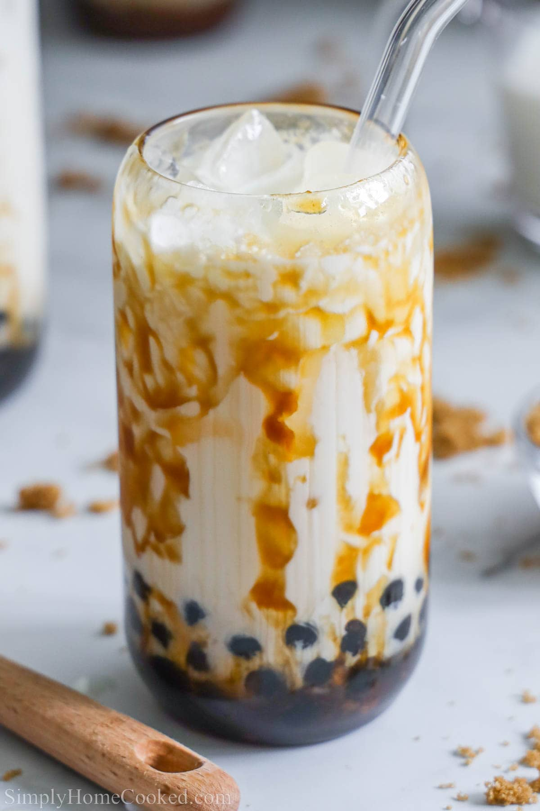
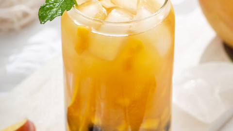

Brown sugar milk S/5$ L/$10
What is Brown Sugar Milk Tea? This drink is made from 3 ingredients, tapioca pearls, caramelised brown sugar and milk. The original boba drink from Taiwan does not contain any tea and is caffeine-free. It is called 黑糖珍珠鮮奶 (Hēitáng zhēnzhū xiān nǎi) in Chinese, which translates to Brown Sugar Fresh Milk.

Mango green tea S/5$ L/$10
What is mango green tea good for?
Mango Green tea is a refreshing beverage that not only satisfies your taste buds but also nourishes your body. Green tea provides many health benefits, such as boosting the immune system and fighting off harmful free radicals. The natural sweetness of mangoes adds a boost of Vitamins A and C.

Strawberry tea S/4 L/$10
What is strawberry milk tea made of?
Strawberry Bubble Tea (Strawberry Boba Milk Tea) - Oh, How ...
Strawberry bubble tea (also called strawberry milk tea) is a fruity drink made with green tea, strawberry syrup, milk, ice, and tapioca balls. Store-bought or homemade strawberry syrup can be used. The syrup colors, sweetens, and flavors the drink. Tapioca balls are the “bubble” (or boba) in bubble tea.